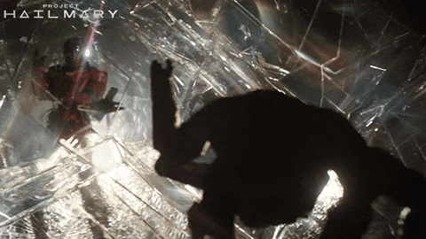

Press a shortcut, ask a question. Roki captures your screen, sends it to an AI model, and streams the answer back. Like having a copilot that actually knows what you're looking at.

Works with any model you want. Claude, GPT-4o, Gemini, or run it locally with Ollama.
Hit Ctrl+Shift+Space from anywhere. Roki captures all your monitors in one shot.
See the AI response appear in real-time as it streams. No waiting for the whole thing to finish.
Got two monitors? Roki captures both, labels them, and tells the AI which one has your cursor.
Claude, GPT-4o, Gemini, OpenRouter, or local Ollama. Swap with a single line of code.
Tauri v2 under the hood. No Electron bloat. Tiny footprint, native performance.
MIT licensed. Fork it, modify it, build a startup on it. I don't mind.
Clone the repo, drop in your API key, and you're off. Takes about 2 minutes.
Clone on GitHub